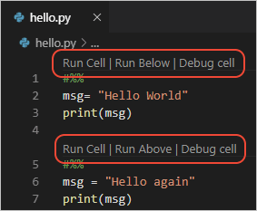
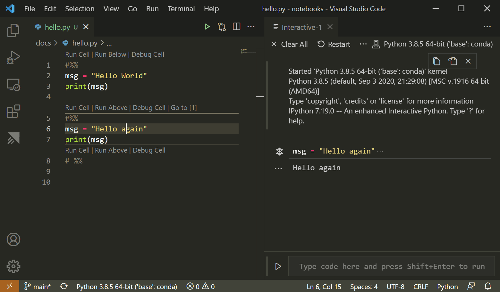
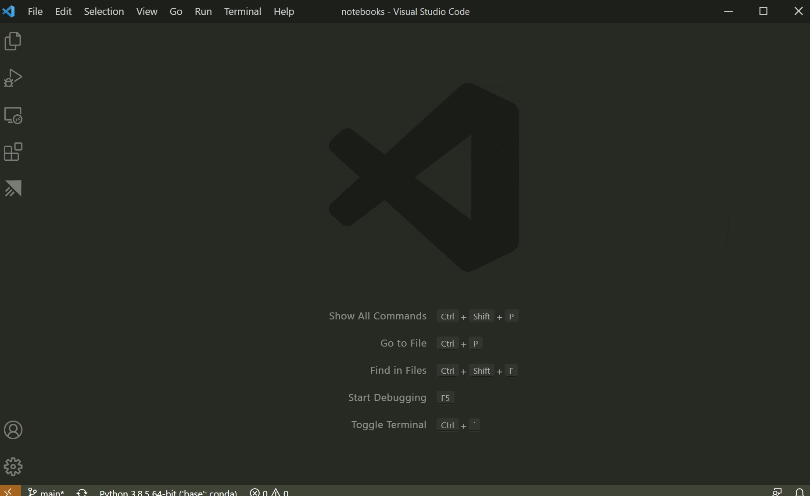
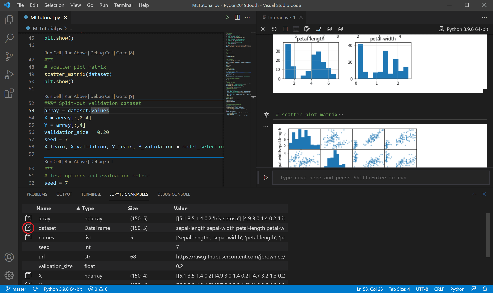
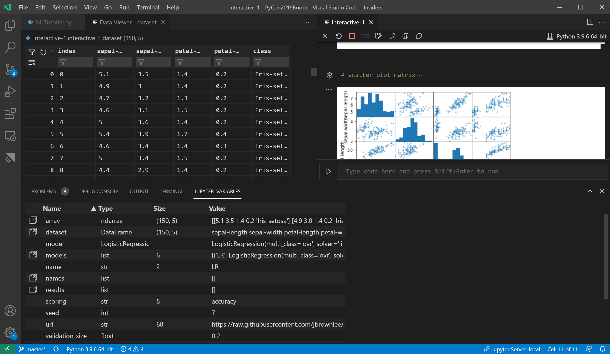
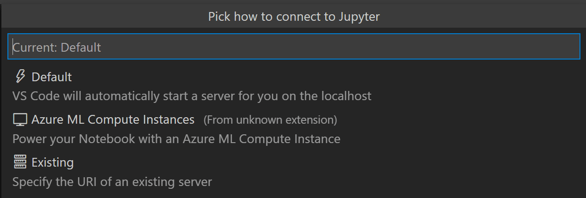
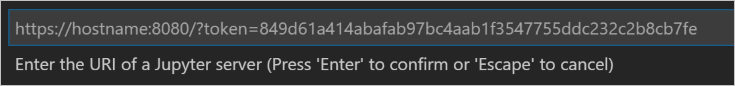
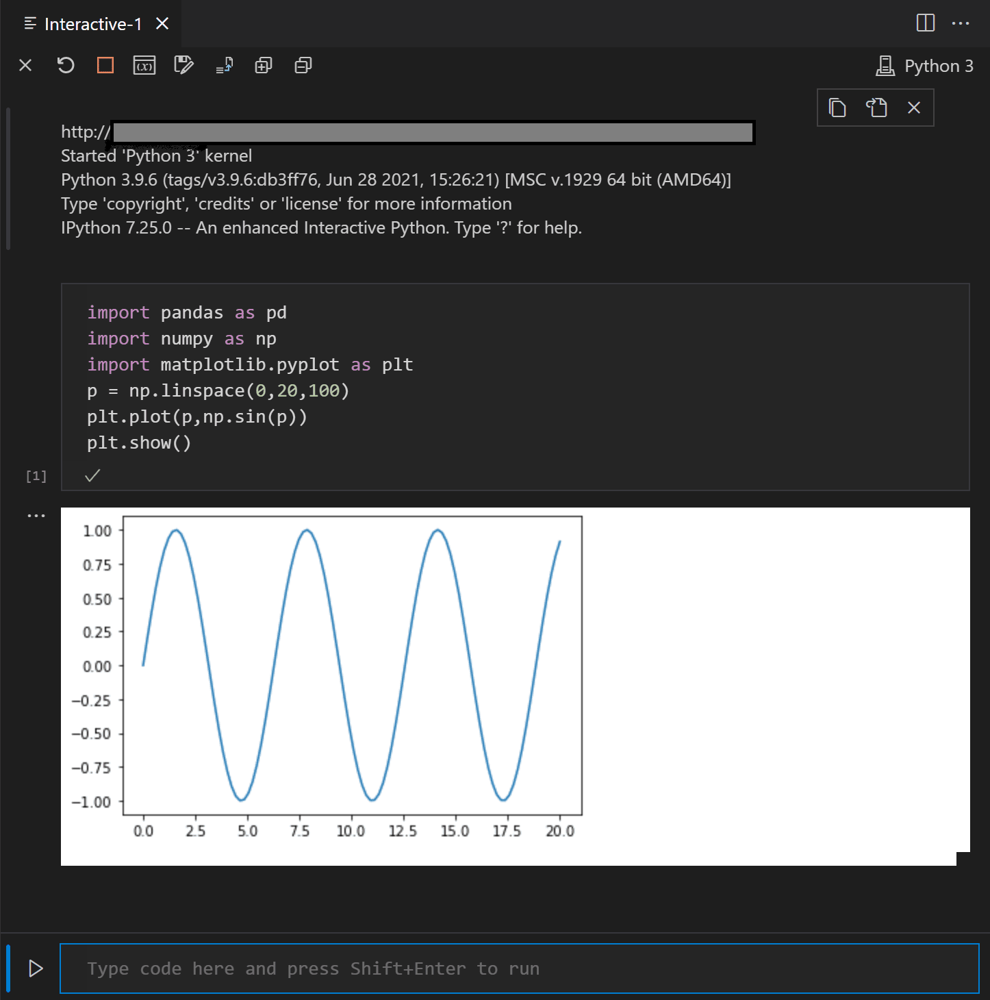
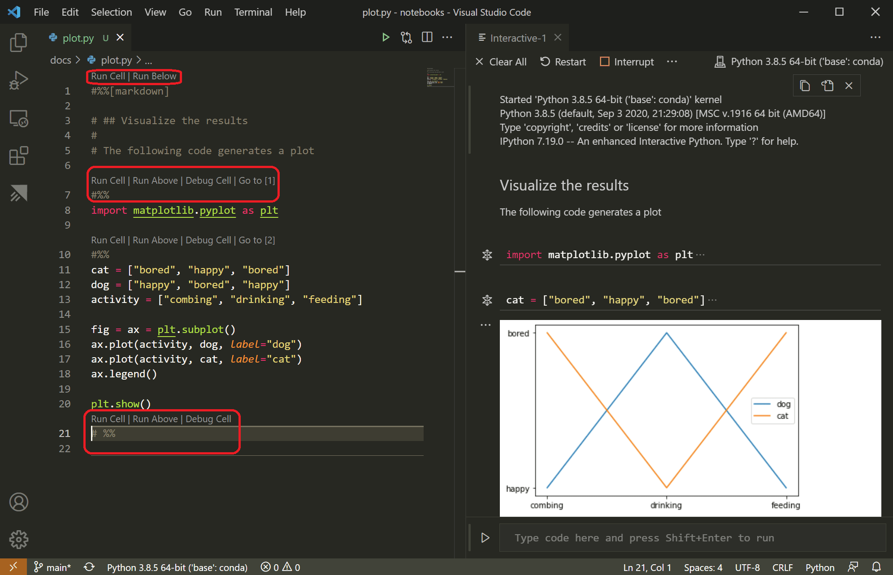

Python 交互窗口
Jupyter（前身为 IPython Notebook）是一个开源项目，可让你在一个称为笔记本的画布上轻松地结合 Markdown 文本和可执行的 Python 源代码。Visual Studio Code 支持原生处理 Jupyter Notebook，也支持通过 Python 代码文件进行处理。本主题涵盖了 Python 代码文件提供的支持，并演示了如何：
- 使用类似 Jupyter 的代码单元格
- 在 Python 交互窗口中运行代码
- 使用变量资源管理器和数据查看器查看、检查和筛选变量
- 连接到远程 Jupyter 服务器
- 调试 Jupyter 笔记本
- 导出 Jupyter 笔记本
要使用 Jupyter 笔记本，你必须在 VS Code 中激活一个 Anaconda 环境，或者另一个已安装 Jupyter 包的 Python 环境。要选择环境，请使用命令面板 (kb(workbench.action.showCommands)) 中的 Python: Select Interpreter 命令。
激活适当的环境后，你可以创建并运行类似 Jupyter 的代码单元格，连接到远程 Jupyter 服务器来运行代码单元格，并将 Python 文件导出为 Jupyter 笔记本。
Jupyter 代码单元格
你可以在 Python 代码中使用 # %% 注释来定义类似 Jupyter 的代码单元格：
# %%
msg = "Hello World"
print(msg)
# %%
msg = "Hello again"
print(msg)注意：请确保将以上代码保存在扩展名为 .py 的文件中。
当 Python 扩展检测到代码单元格时，它会添加 Run Cell 和 Debug Cell CodeLens 装饰。第一个单元格还包含 Run Below，而所有后续单元格都包含 Run Above：

注意： 默认情况下，Debug Cell 只会单步执行用户代码。如果你想单步执行非用户代码，需要在 Jupyter 扩展设置中取消选中 Debug Just My Code (kb(workbench.action.openSettings))。
Run Cell 仅适用于单个代码单元格。Run Below 会出现在第一个单元格上，运行文件中的所有代码。Run Above 适用于该装饰所在单元格之前（不包括该单元格）的所有代码单元格。例如，你可以使用 Run Above 在运行特定单元格之前初始化运行时环境的状态。
选择一个命令会启动 Jupyter（如有必要，这可能需要一分钟时间），然后在 Python 交互窗口中运行相应的单元格：

你也可以使用 (kbstyle(Ctrl+Enter)) 或 Python: Run Selection/Line in Python Terminal 命令 (kbstyle(Shift+Enter)) 来运行代码单元格。使用此命令后，Python 扩展会自动将光标移动到下一个单元格。如果你在文件的最后一个单元格中，扩展会自动插入另一个 # %% 分隔符来创建新单元格，模拟 Jupyter 笔记本的行为。
你还可以单击行号左侧的边距来设置断点。然后，你可以使用 Debug Cell 为该代码单元格启动调试会话。调试器会在断点处停止执行，并允许你逐行单步执行代码以及检查变量（有关详细信息，请参阅调试）。
其他命令和键盘快捷键
下表列出了处理代码单元格时支持的其他命令和键盘快捷键。
| 命令 | 键盘快捷键 | ||
|---|---|---|---|
| --------- | --------- | ||
| Python: Go to Next Cell | kbstyle(Ctrl+Alt+]) | ||
| Python: Go to Previous Cell | kbstyle(Ctrl+Alt+[) | ||
| Python: Extend Selection by Cell Above | kbstyle(Ctrl+Shift+Alt+[) | ||
| Python: Extend Selection by Cell Below | kbstyle(Ctrl+Shift+Alt+]) | ||
| Python: Move Selected Cells Up | kbstyle(Ctrl+; U) | ||
| Python: Move Selected Cells Down | kbstyle(Ctrl+; D) | ||
| Python: Insert Cell Above | kbstyle(Ctrl+; A) | ||
| Python: Insert Cell Below | kbstyle(Ctrl+; B) | ||
| Python: Insert Cell Below Position | kbstyle(Ctrl+; S) | ||
| Python: Delete Selected Cells | kbstyle(Ctrl+; X) | ||
| Python: Change Cell to Code | kbstyle(Ctrl+; C) | ||
| Python: Change Cell to Markdown | kbstyle(Ctrl+; M) |
使用 Python 交互窗口
上一节提到的 Python 交互窗口可以作为独立控制台使用，支持任意代码（可以有或没有代码单元格）。要将该窗口用作控制台，请从命令面板中使用 Jupyter: Create Interactive Window 命令打开它。然后你可以输入代码，使用 kbstyle(Enter) 换行，使用 kbstyle(Shift+Enter) 运行代码。
要将该窗口与文件一起使用，请从命令面板中使用 Jupyter: Run Current File in Python Interactive Window 命令。
IntelliSense
Python 交互窗口具有完整的 IntelliSense 功能——代码补全、成员列表、方法快速信息和参数提示。在 Python 交互窗口中输入代码的效率与在代码编辑器中一样高。

图表查看器
图表查看器使你能够更深入地处理图表。在查看器中，你可以在当前会话中对图表进行平移、缩放和导航。你还可以将图表导出为 PDF、SVG 和 PNG 格式。
在 Python 交互窗口中，双击任何图表即可在查看器中打开它，或者选择图表左上角的展开按钮。
变量资源管理器和数据查看器
在 Python 交互窗口中，你可以查看、检查和筛选当前 Jupyter 会话中的变量。在运行代码和单元格后，选择交互窗口工具栏中的变量按钮以打开变量资源管理器，你将看到当前变量的列表，这些变量会随着代码中变量的使用而自动更新。

有关变量的更多信息，你还可以双击某一行或使用在数据查看器中显示变量按钮，在数据查看器中查看变量的更详细视图。打开后，你可以通过搜索行来筛选值。

连接到远程 Jupyter 服务器
你可以通过连接到远程 Jupyter 服务器，将 Jupyter 笔记本中的密集型计算卸载到其他计算机。连接后，代码单元格将在远程服务器上运行，而不是在本地计算机上运行。
要连接到远程 Jupyter 服务器：
- 从命令面板 (
kb(workbench.action.showCommands)) 中运行 Jupyter: Specify local or remote Jupyter server for connections 命令。 - 选择你希望如何连接到 Jupyter 服务器。

- 如果是远程工作，请在提示时提供服务器的 URI（主机名），并在 URL 中包含身份验证令牌，以
?token=作为 URL 参数。（如果你在 VS Code 终端中启动服务器时启用了身份验证令牌，带有令牌的 URL 通常会出现在终端输出中，你可以从中复制它。）或者，你可以在提供 URI 后指定用户名和密码。

- Python 交互窗口通过显示 URI（在下图中被模糊处理）来指示代码在哪里运行：

注意： 为了增强安全性，Microsoft 建议为你的 Jupyter 服务器配置安全预防措施，例如 SSL 和令牌支持。这有助于确保发送到 Jupyter 服务器的请求经过身份验证，并且与远程服务器的连接是加密的。有关保护笔记本服务器的指导，请参阅 Jupyter 文档。
将 Jupyter 笔记本转换为 Python 代码文件
当你激活了已安装 Jupyter 的环境后，可以在 VS Code 中打开一个 Jupyter 笔记本文件 (.ipynb)，然后将其转换为 Python 代码。转换文件后，你可以像运行其他任何 Python 文件一样运行代码，也可以使用 VS Code 调试器。在 VS Code 中打开和调试笔记本是查找和解决代码错误的便捷方法，这在 Jupyter 笔记本中直接操作是很困难的。
当你打开一个笔记本文件时，Visual Studio Code 会自动在笔记本编辑器中打开它。使用工具栏上的转换图标将 Notebook (.ipynb) 文件转换为 Python 文件 (.py)。
选择转换图标，然后选择"Python Script"，等待几秒钟，VS Code 会在一个未命名的文件中打开转换后的笔记本。笔记本的单元格在 Python 文件中用 # %% 注释分隔；Markdown 单元格会完全转换为前面带有 # %% [markdown] 的注释，并在交互窗口中与代码和输出（如图表）一起以 HTML 形式呈现：

注意： 首次在 Python 文件中运行代码单元格时，Python 扩展会启动一个 Jupyter 服务器。服务器启动以及 Python 交互窗口显示代码结果可能需要一些时间。
调试 Jupyter 笔记本
Visual Studio Code 调试器允许你单步执行代码、设置断点、检查状态以及分析问题。使用调试器是查找和纠正笔记本代码问题的有效方法。
- 在 VS Code 中，按照本文开头所述，激活一个已安装 Jupyter 的 Python 环境。
- 按照上一节所述，将笔记本的
.ipynb文件导入到 VS Code 中。（如果你使用的是基于云的 Jupyter 环境（例如 Azure Notebooks），请先下载该文件。） - 要启动调试器，请使用以下选项之一：
- 对于整个笔记本，打开命令面板 (
kb(workbench.action.showCommands)) 并运行 Jupyter: Debug Current File in Python Interactive Window 命令。- 对于单个单元格，使用显示在单元格上方的 Debug Cell 装饰。调试器会专门从该单元格中的代码开始。默认情况下，Debug Cell 只会单步执行用户代码。如果你想单步执行非用户代码，需要在 Jupyter 扩展设置中取消选中 Debug Just My Code (
kb(workbench.action.openSettings))。
- 对于单个单元格，使用显示在单元格上方的 Debug Cell 装饰。调试器会专门从该单元格中的代码开始。默认情况下，Debug Cell 只会单步执行用户代码。如果你想单步执行非用户代码，需要在 Jupyter 扩展设置中取消选中 Debug Just My Code (
- 对于整个笔记本，打开命令面板 (
导出 Jupyter 笔记本
除了打开 Jupyter 笔记本之外，你还可以使用命令面板 (kb(workbench.action.showCommands)) 中的以下命令之一，将 Python 文件中的内容从 VS Code 导出到 Jupyter 笔记本（扩展名为 .ipynb）。
- Jupyter: Export Current Python File as Jupyter Notebook：从当前文件的内容创建一个 Jupyter 笔记本，使用
# %%和# %% [markdown]分隔符来指定各自的单元格类型。 - Jupyter: Export Current Python File and Output as Jupyter Notebook：从当前文件的内容创建一个 Jupyter 笔记本，并包含代码单元格的输出。
- Jupyter: Export Interactive Window as Jupyter Notebook：从 Python 交互窗口的内容创建一个 Jupyter 笔记本。
导出内容后，VS Code 会显示一个提示，你可以通过该提示在浏览器中打开笔记本。